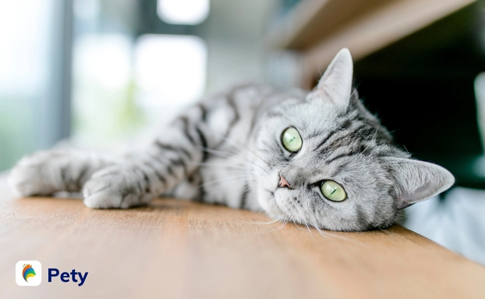
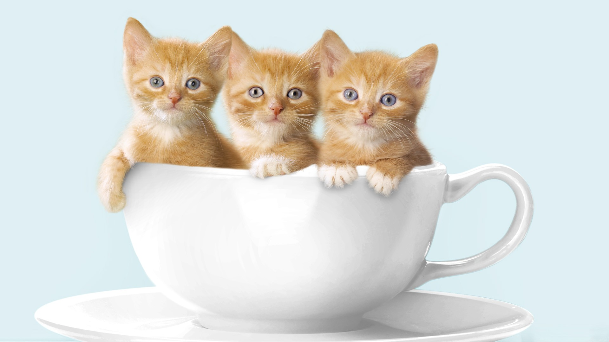

Cách Nuôi Mèo Cơ Bản Cho Người Mới Bắt Đầu
Hướng dẫn cách chăm sóc, cách nuôi mèo trong nhà cho người mới bắt đầu đảm bảo sức khỏe, chuẩn như chuyên gia
Hiểu rõ về đặc điểm của từng giống mèo, nắm rõ kinh nghiệm, cách nuôi mèo trong nhà giúp thú cưng của bạn khoẻ mạnh. Cách chăm sóc, cách nuôi mèo trong nhà không phải đơn giản là đưa một chú mèo về, mèo ăn thật nhiều, tắm rửa sạch sẽ là tốt. Vậy cách chăm sóc mèo, cách nuôi mèo, hướng dẫn nuôi mèo như thế nào là đúng cách và đảm bảo sức khỏe cho thú nuôi? Bài viết này Pety sẽ chia sẻ cuốn cẩm nang hướng dẫn cách nuôi mèo trong nhà cơ bản cho người mới nuôi mèo.
1. Chọn giống mèo phù hợp
Là một người bạn thân thiết và được nhiều người lựa chọn để nuôi trong nhà như một thú cưng, tuy nhiên mỗi giống mèo có đặc điểm khác biệt và phù hợp với một loại đối tượng người nuôi. Chính vì vậy, việc chọn lựa mèo bản thân một giống mèo phù hợp là nền tảng để bạn đảm bảo nuôi mèo đúng cách và đảm bảo nuôi mèo trong nhà khỏe mạnh.
Một số yếu tố bạn nên xem xét để bạn chọn lựa giống mèo nuôi phù hợp: môi trường và không gian sống của bạn là nhà riêng hay chung cư, chật hẹp hay rộng rãi, gia đình bạn có trẻ con hay không; mức sống và mức chi phí bạn sẵn sàng sử dụng mèo chú mèo của bạn; tính cách của bạn là năng động, hướng ngoại hay hướng nội, thích yên tĩnh; … Chẳng hạn như nếu nhà bạn có trẻ nhỏ một số giống mèo hung dữ như mèo Xiêm, mèo Bengal … không phù hợp, bạn thích không gian yên tĩnh thì những giống mèo có kích thước không quá lớn và không ưa hoạt động như mèo anh lông ngắn là lựa chọn tốt.
2. Chọn địa chỉ mua hoặc nhận nuôi tin cậy
Tốt nhất nên mua hoặc nhận nuôi mèo của chủ nuôi có mèo mẹ ở nhà đẻ hay trực tiếp nhập về có nguồn gốc, lý lịch rõ ràng. Luôn lựa chọn những bé nhanh nhẹn, khỏe mạnh, có “sổ sức khoẻ” đi kèm dán tem các loại vacxin đã tiêm phòng mèo mèo và ngày tẩy giun mèo mèo định kỳ.
Ngoài ra, bạn nên lựa chọn mèo con trên 8 tuần tuổi dễ nuôi, ổn định hơn vì mèo con dưới 8 tuần tuổi vẫn phụ thuộc nhiều vào mẹ, rất khó để chăm sóc. Bạn có thể tách mẹ và bắt đầu việc cai sữa, ăn dặm cũng như bắt đầu huấn luyện để hình thành tính cách của chúng theo mong muốn của bạn.
3. Cách nuôi mèo khi mới về nhà
3.1. Kiểm tra sức khoẻ
Đưa mèo đến bác sĩ thú y uy tín để thực hiện khám sức khoẻ tổng thể và được nhận tư vấn trực tiếp cách chăm sóc mèo phù hợp với giống mèo và thể trạng thú cưng của bạn. Yêu cầu bác sĩ cấp sổ khám bệnh để theo dõi, chủ động tạo hồ sơ sức khỏe thú cưng trên Pety giúp theo dõi, cập nhật thông tin sức khỏe thú cưng thường xuyên để nhận những gợi ý, tư vấn hay cảnh báo vấn đề sức khỏe thú cưng.
3.2. Chuẩn bị chỗ ở của mèo
Chỗ ở mèo cần thoáng mát, ấm, có đủ không khí và tránh để mèo nằm điều hoà hay trước quạt vì dễ có khả năng bị nhiễm lạnh, ho. Những người nhiều kinh nghiệm nuôi mèo thường chỉ dẫn các vị trí không nên để mèo ở vị trí cao như cửa sổ, ban công, cầu thang…
3.3. Tắm cho mèo
Lưu ý về cách chăm sóc mèo khi mới đưa mèo con về nhà không nên tắm ngay bằng nước để tránh bị viêm phổi và phát triển thành các bệnh truyền nhiễm nguy hiểm. Nếu thấy thú cưng hôi, hãy tắm khô.
4. Hướng dẫn cách chăm sóc mèo trong việc ăn uống

4.1. Cho mèo ăn đủ dinh dưỡng, đủ chất
Mèo là “loài động vật ăn thịt bắt buộc", chúng cần hấp thụ mỡ, đạm động vật để có đủ dưỡng chất. Bạn cần đảm bảo thức ăn đủ chất, đủ dinh dưỡng, đủ năng lượng, tuyên nhiên không nên lạm dụng thức ăn khô, thuốc hoặc thức ăn tổng hợp. Với mèo con có, nên cân đối liều lượng mèo ăn hợp lý do mèo con thường ăn hết khẩu phần được cho, không cho ăn quá nhiều sữa, cá tanh, mỡ, thức ăn mặn. Thực phẩm không nên cho mèo ăn: socola, trà, kẹo, bánh ngọt, nho tươi, nho khô, sữa và các sản phẩm làm từ sữa, kem, quả bơ, ...
4.2. Cho mèo ăn uống khoa học
Với mèo con, cách mèo ăn uống khoa học: khoảng 3 – 4 bữa ngày, chỉ mèo ăn gần no, không để sẵn đồ ăn, nước uống sạch và luôn đầy đủ, dụng cụ ăn sạch sẽ, khô ráo, thay đổi đồ ăn mèo mèo sang loại khác sau mỗi một tuần và bắt đầu bằng việc thêm một phần thức ăn mới với ba phần thức ăn cũ, sau dần chuyển hẳn sang loại mới.
5. Hướng dẫn cách chăm sóc sức khỏe
5.1. Lịch trình tẩy giun mèo mèo
Mèo dưới 3 tháng tuổi: Tẩy giun lần đầu khi mèo được 2 hoặc 3 tuần tuổi, sau đó duy trì 2 tuần
tẩy 1 lần cho tới khi được 3 tháng tuổi.
Mèo từ 3 đến 6 tháng tuổi: Tẩy giun cho mèo mỗi tháng một lần
Mèo từ 6 tháng tuổi trở lên: Tẩy giun cho mèo 3 tháng một lần
Đối với mèo cái, tẩy giun trước khi phối giống 1 tháng.
Đối với mèo cái, tẩy giun trước khi phối giống 1 tháng.
Tuy nhiên, lịch trình tẩy giun cũng phụ thuộc vào loại thuốc mà bạn sử dụng cho mèo. Hãy tham
khảo kỹ hướng dẫn trên bao bì hoặc tư vấn trực tiếp từ bác sĩ.
Lưu ý, tránh quên lịch tẩy giun của bé cưng để đảm bảo sức khoẻ cũng như tăng tuổi thọ cho thú cưng của bạn thêm 2 đến 3 năm. Tạo hồ sơ sức khỏe cho thú cưng ngay tại Pety, không cần ghi nhớ thủ công lịch tẩy giun, ứng dụng sẽ tự động nhắc nhở bạn.
5.2. Lịch trình tiêm phòng cho mèo
Mèo 6 tuần tuổi: Tiêm mũi vacxin đầu tiên, mũi vacxin 3 bệnh gồm: Giảm bạch cầu, viêm mũi - khí quản truyền nhiễm, bệnh hô hấp do Herpervirus.
Mèo 9 tuần tuổi: Tiêm mũi vacxin 3 bệnh.
Mèo 16 tuần tuổi: Tiêm 1 mũi vacxin dại
Sau đó, cách năm hãy tiêm nhắc lại 1 mũi vacxin 3 bệnh. Lưu ý, chỉ tiêm phòng vacxin cho mèo có
thể trạng tốt, không có dấu hiệu mệt mỏi, bỏ ăn, sốt … Cũng như tẩy giun, việc tiêm phòng đầy đủ
làm tăng tuổi thọ cho bé mèo của bạn. Tạo ngay hồ sơ sức khoẻ cho bé mèo của bạn tại Pety để
được tự động nhắc nhở lịch tiêm phòng.
6. Huấn luyện và hướng dẫn cách nuôi mèo trong nhà
6.1. Hướng dẫn cách dạy mèo đi vệ sinh đúng chỗ
Cách nuôi mèo trong nhà đơn giản nhất là hãy huấn luyện chúng biết nghe lời. Bài học đầu tiên và quan trọng nhất chính là dạy chúng đi vệ sinh đúng chỗ. Việc này không hề khó, vì theo bản năng, mèo có thói quen chôn, vùi lấp phân của chúng.
Điều đầu tiên cần làm là chuẩn bị khay, hộp đựng cát là nơi đựng chất thải khi mèo đi vệ sinh và nên có riêng khay đựng cát nếu bạn nuôi nhiều mèo. Đặt khay cát ở nơi bạn muốn mèo sẽ đi vệ sinh, có thể là ở ngoài ban công, trong nhà vệ sinh hay gần chỗ mèo hay chơi, …
Theo chia sẻ về cách nuôi mèo trong nhà từ những chuyên gia hay người có kinh nghiệm lâu năm, khi mèo đi bậy lần đầu, không nên đánh mắng. Hãy lấy một cái khăn nhỏ thấm nước tiểu hoặc túm phân của mèo lại và đặt vào vị trí muốn nó đi vệ sinh. Nếu lần thứ hai đi bậy, bằng mọi giá phải bắt quả tang ngay lúc đó và thực hiện theo hướng dẫn sau để thú cưng hiểu nên đi vệ sinh đúng chỗ. Đầu tiên, dùng tay giữ chặt phần da ở cổ, xách lên dí đầu vào đống nước tiểu (hoặc phân) và mắng nó. Tiếp đến, xách mèo sang vị trí bạn muốn mèo đi vệ sinh, tiếp tục dí đầu mèo lần hai và dặn đi vệ sinh ngay chỗ này. Lặp đi lặp lại hành động này mèo sẽ quen và nhận thức được về vị trí nên đi vệ sinh.
Với mèo dưới 2 năm tuổi, nên áp dụng cách huấn luyện trên càng sớm càng tốt để đạt hiệu quả cao, đặc biệt với các bé có tính quậy phá, tét thật mạnh vào mông (tuyệt đối không đánh vào phần bụng). Mèo trên 2 năm tuổi sẽ khó dạy hơn, chủ nên bế lại và nói nhỏ nhẹ như những người trưởng thành để bé hiểu, lắng nghe và đi vệ sinh đúng chỗ.
6.2. Hướng dẫn cách huấn luyện mèo trong nhà không cắn phá đồ đặc
Thói quen gặp cắn là bản năng của loài mèo, vì vậy mèo của bạn thường hay cắn tay khi chơi đùa, cắn cào đồ đạc trong nhà. Thật khó để trị hết trong thời gian ngắn, Pety khuyên bạn nên sử dụng đồ chơi đề chuyển hướng sự chú ý của mèo đồng thời tránh mèo cắn xé đồ đạc trong nhà. Tuy nhiên, cũng cần chú ý để mèo của bạn không nuốt phải đồ chơi. Lưu ý, những cách ngắn hạn như xịt các loại tinh dầu, bôi ớt lên các vị trí không muốn mèo cắn chỉ có tác dụng tạm thời, lần sau mèo sẽ tiếp tục khi mùi bay hết. Hãy chuẩn bị đồ chơi và dạy cho mèo nhà bạn cách sử dụng các loại đồ chơi đó.
Chia sẻ phía trên là cẩm nang căn bản, cuốn sách vỡ lòng để bất kỳ ai trong chúng ta đều có thể bước đầu học cách chăm sóc mèo trong nhà. Những người bạn bốn chân với mỗi thời kỳ như lúc còn nhỏ, khi trưởng thành, mang thai lại cần cách chăm sóc riêng, hãy tìm hiểu ở những chuyên mục cụ thể Pety đã chia sẻ. Không chỉ vậy, Pety cũng chia sẻ với các đồng sen hướng dẫn nuôi mèo một số giống hiện nay được nhiều bạn lựa chọn để nuôi như: mèo Anh lông ngắn, mèo Anh lông dài, mèo Nga, mèo Ba Tư.